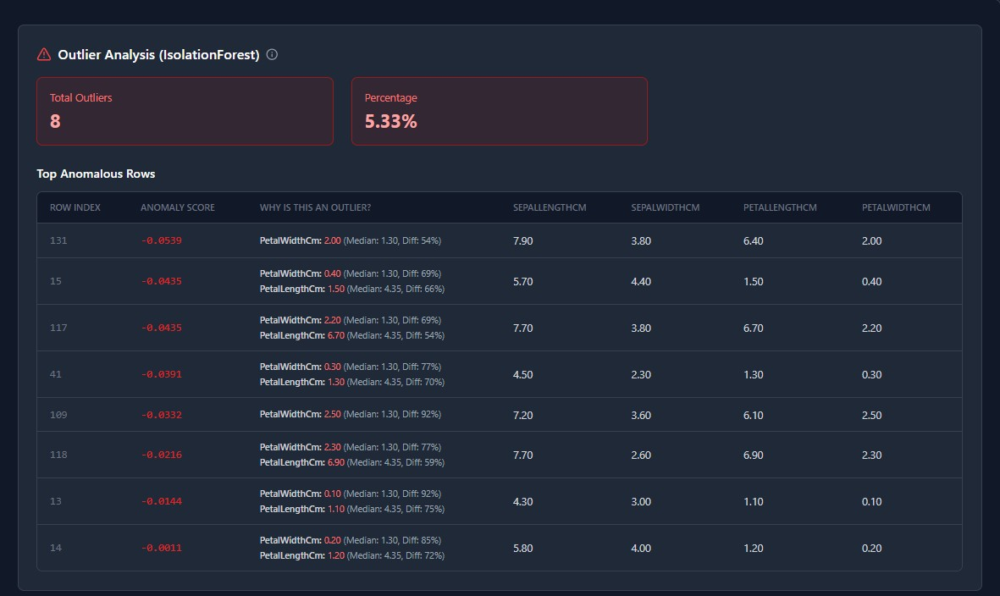
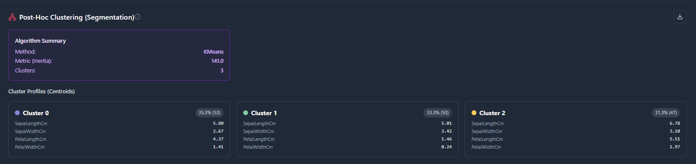
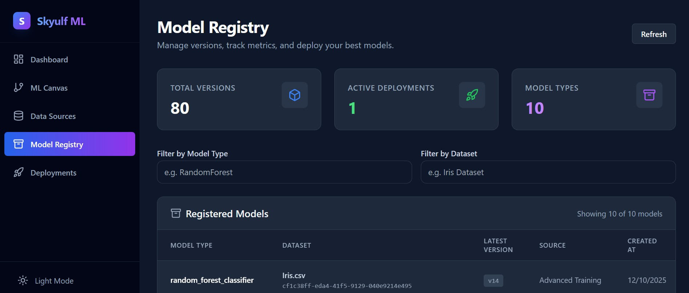

Your model is one drawing in a much longer set.
Skyulf is a self-hosted platform for the whole machine learning workflow — profiling a raw file, building the pipeline, training and comparing models, then deploying and watching them drift. The same engine ships as an Apache-2.0 Python package, so nothing you build is stuck inside a canvas.
No signup on the demo. Self-host with Docker Compose, or pip install skyulf-core and skip the platform entirely.
- Project
- Skyulf
- Deployment
- Self-hosted
- Platform licence
- AGPL-3.0
- Engine licence
- Apache-2.0
- Export
- Jupyter notebook
SHEET 01Intake
Start from the file you actually have.
Point Skyulf at a CSV, Excel workbook, JSON, Parquet file, or an S3-compatible bucket. It reads the schema, profiles every column, and tells you what it found before you commit to a single transformation.
- FormatsCSV, Excel, JSON, Parquet, S3-compatible object storage
- ArtifactsLocal disk or S3-compatible storage — your bucket, your keys
- MetadataSQLite to start, PostgreSQL when the deployment grows

SHEET 02Survey
The exploration you keep meaning to do properly.
Automated EDA runs the full statistical survey rather than the three charts you have time for: distributions, correlations, outliers, segmentation, target analysis, feature importance, and causal discovery.
It is the difference between guessing which columns matter and being shown.







SHEET 03Assembly
A pipeline you can see the shape of.
Preprocessing, feature engineering, splitting, and modeling are nodes on a canvas. The graph makes the order of operations visible — which is exactly where leakage hides when the same work is a thousand lines of notebook.
Training runs in the background through Celery and Redis, or on background threads for smaller setups. Every canvas exports to a Jupyter notebook, full or compact, so the work leaves with you.

SHEET 04Trials
Compare runs instead of remembering them.
Every training run is recorded and comparable side by side, with metrics, parameters, and feature importance kept next to the pipeline that produced them. Promotion to the registry is a decision you make from evidence, not from a filename ending in _final_v3.


SHEET 05Service
The half of the job most tools hand back to you.
A trained model is the beginning of the maintenance. Skyulf carries the same project into a registry with version history, deployment, inference, drift monitoring, audit history, and operational diagnostics — inside the system that built the model, not a second stack you assemble afterwards.




SHEET 06Two ways in
Same engine. Pick the interface that fits the day.
The platform
A self-hosted workspace for the visual end of the work — profiling, canvas pipelines, experiment comparison, registry, deployment, monitoring.
- Run it locally with the repository start scripts
- Self-host the full stack with Docker Compose
- Export any pipeline to a Jupyter notebook
- AGPL-3.0
skyulf-core
The Python engine on its own, in your scripts and notebooks. No platform, no server, no canvas — just the pipeline API.
# pip install skyulf-core
import polars as pl
from skyulf import SkyulfPipeline
pipeline = SkyulfPipeline({
"preprocessing": [
{"name": "split", "transformer": "TrainTestSplitter",
"params": {"target_column": "purchased", "test_size": 0.2}},
{"name": "impute", "transformer": "SimpleImputer",
"params": {"columns": ["income"], "strategy": "median"}},
],
"modeling": {"type": "logistic_regression"},
})
pipeline.fit(pl.read_csv("customers.csv"), target_column="purchased")
pipeline.save("customer_model.pkl")SHEET 07Issued for use
Open the demo before you decide anything.
It is the real product with real data, no account required. If it holds up, the whole stack runs on your own infrastructure the same afternoon.